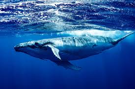

The blue whale (Balaenoptera musculus) is a marine mammal and a baleen whale. Reaching a maximum confirmed
length
of 29.9 meters (98 ft) and weighing up to 199 tonnes (196 long tons; 219 short tons), it is the largest
animal
known to have ever existed. The blue whale's long and slender body can be of various shades of greyish-blue
dorsally and somewhat lighter underneath. Four subspecies are recognized: B. m. musculus in the North
Atlantic
and North Pacific, B. m. intermedia in the Southern Ocean, B. m. brevicauda (the pygmy blue whale) in the
Indian
Ocean and South Pacific Ocean, B. m. indica in the Northern Indian Ocean. There is also a population in the
waters off Chile that may constitute a fifth subspecies.
In general, blue whale populations migrate between their summer feeding areas near the poles and their
winter
breeding grounds near the tropics. There is also evidence of year-round residencies, and partial or
age/sex-based migration. Blue whales are filter feeders; their diet consists almost exclusively of krill.
They
are generally solitary or gather in small groups, and have no well-defined social structure other than
mother-calf bonds. The fundamental frequency for blue whale vocalizations ranges from 8 to 25 Hz and the
production of vocalizations may vary by region, season, behavior, and time of day. Orcas are their only
natural
predators.
The blue whale was once abundant in nearly all the Earth's oceans until the end of the 19th century. It was
hunted almost to the point of extinction by whalers until the International Whaling Commission banned all
blue
whale hunting in 1966. The International Union for Conservation of Nature has listed blue whales as
endangered
as of 2018. It continues to face numerous man-made threats such as ship strikes, pollution, ocean noise and
climate change.